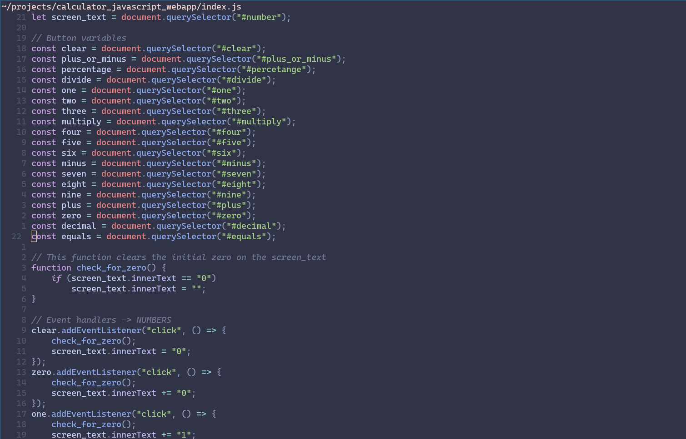
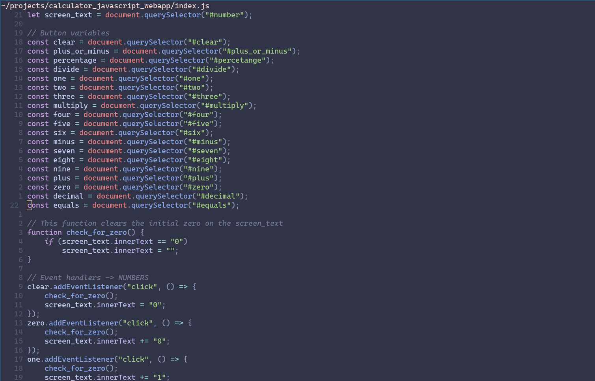

Web projects
Calculator
 

I conceptualized and crafted this user-friendly tool from scratch. With a clean and intuitive interface, it allows users to perform basic arithmetic operations effortlessly. I designed the calculator with a responsive layout to ensure it works seamlessly on both desktop and mobile devices. The code behind it demonstrates my proficiency in JavaScript and web development, as I implemented the logic for addition, subtraction, multiplication, and division while ensuring accurate calculations. This project not only showcases my technical skills but also highlights my commitment to creating practical, user-centered web applications.
This JavaScript calculator is a web-based application developed using HTML, CSS, and JavaScript. The user interface features a responsive layout for compatibility across various devices. The JavaScript code handles the arithmetic operations, providing accurate results for addition, subtraction, multiplication, and division. The calculator's logic ensures proper operator precedence and error handling for a seamless user experience. This project demonstrates my proficiency in front-end web development, particularly in JavaScript, while emphasizing clean code and usability.
DotNet projects
Foxy the Fox
As a solo developer, I brought this captivating 2D platformer to life, featuring the clever fox, Foxy, on a journey through lush forests, treacherous caves, and mysterious ruins. I handled every aspect, from character design and pixel art to coding Foxy's controls and crafting engaging levels.
With Windows Forms, I designed the game's graphical user interface, carefully placing windows, buttons, and UI elements to enhance the player's experience. Beneath the surface, I implemented complex logic to handle Foxy's movements, physics simulations for gravity and velocity, and meticulous collision detection to ensure a smooth and immersive gameplay. Foxy's animations and behaviors are all orchestrated through event-driven programming and game loops.